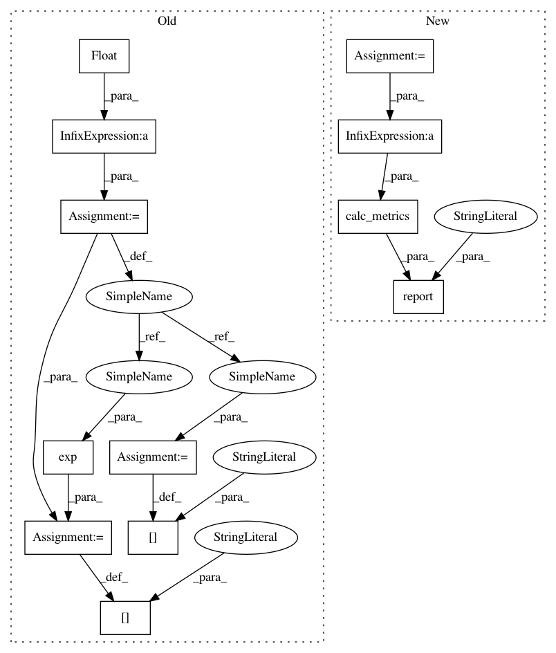

6aad1de658a933d3fa376f7fe9abf419da8a8bd2,python/baseline/pytorch/seq2seq/train.py,Seq2SeqTrainerPyTorch,test,#Seq2SeqTrainerPyTorch#Any#Any#Any#,32
Before Change
pg.done()
self.log.debug({"phase": phase, "time": time.time() - start})
avg_loss = float(total_loss)/total
metrics["avg_loss"] = avg_loss
metrics["perplexity"] = np.exp(avg_loss)
for reporting in reporting_fns:
reporting(metrics, epochs, phase)
return metrics
After Change
for batch_dict in pg(vs):
input_ = self._input(batch_dict)
tgt = input_["tgt"]
tgt_lens = batch_dict["tgt_lengths"]
pred = self.model(input_)
loss = self.crit(pred, tgt)
toks = self._num_toks(tgt_lens)
total_loss += loss.item() * toks
total_toks += toks
metrics = self.calc_metrics(total_loss, total_toks)
self.report(
epochs, metrics, start,
phase, "EPOCH", reporting_fns
)
return metrics
def train(self, ts, reporting_fns):
self.model.train()
In pattern: SUPERPATTERN
Frequency: 3
Non-data size: 12
Instances
Project Name: dpressel/mead-baseline
Commit Name: 6aad1de658a933d3fa376f7fe9abf419da8a8bd2
Time: 2018-11-26
Author: blester125@users.noreply.github.com
File Name: python/baseline/pytorch/seq2seq/train.py
Class Name: Seq2SeqTrainerPyTorch
Method Name: test
Project Name: dpressel/mead-baseline
Commit Name: 6aad1de658a933d3fa376f7fe9abf419da8a8bd2
Time: 2018-11-26
Author: blester125@users.noreply.github.com
File Name: python/baseline/dy/seq2seq/train.py
Class Name: Seq2SeqTrainerDynet
Method Name: test
Project Name: dpressel/mead-baseline
Commit Name: 6aad1de658a933d3fa376f7fe9abf419da8a8bd2
Time: 2018-11-26
Author: blester125@users.noreply.github.com
File Name: python/baseline/pytorch/lm/train.py
Class Name: LanguageModelTrainerPyTorch
Method Name: test